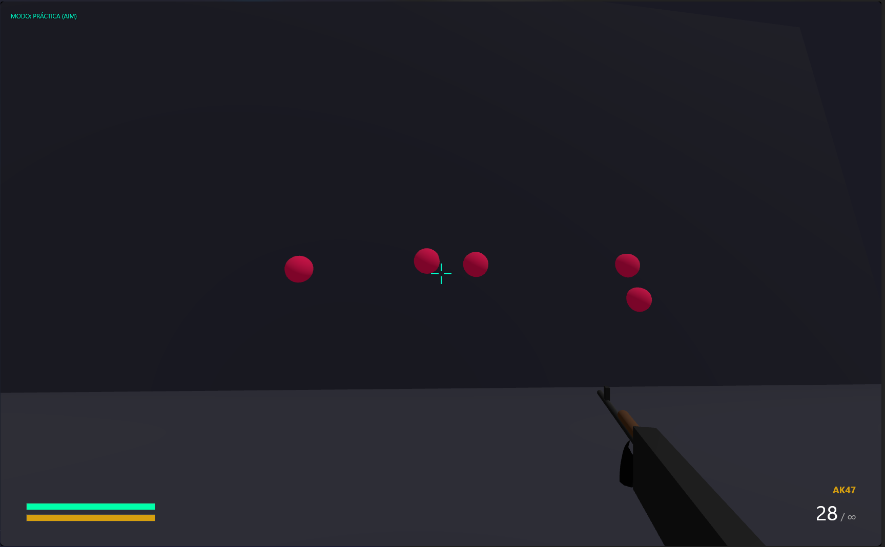

Defuse 5v5
Terroristas contra antiterroristas con bots, economía, compra de armas, plantado y desactivado de la bomba. Tres mapas: Dust II, Italy y Office.
 Team T Studio
Team T Studio
Creadores de realidades · Developers of FAFI 1.6
Explore projects

Platform for improving at competitive games. Currently in the pre-production phase.
FAFI 1.6 es un shooter táctico en primera persona que corre directamente en tu navegador: sin instalar nada, con modo Defuse 5v5, una campaña histórica, armas con skins diseñadas a mano y cajas en 3D. Optimizado para que funcione hasta en equipos básicos.

Terroristas contra antiterroristas con bots, economía, compra de armas, plantado y desactivado de la bomba. Tres mapas: Dust II, Italy y Office.
30 segundos de blancos móviles para afinar la puntería, con todas las armas libres y marcador de precisión.
Un mapa de Europa con los hechos de la Segunda Guerra Mundial. Ya puedes vivir el desembarco de Normandía, con locución, música y modelos 3D de la época.
AK-47, M4A4, AWP, Desert Eagle y cuchillo, con 37 skins: camuflajes, llamas, escamas, circuitos luminosos y más, en tres rarezas.
Abre cajas con una animación épica: la tapa salta, el arma sale flotando y descubres tu skin. Las repetidas te devuelven coins.
Calidad Mínima, Baja, Media y Alta. El juego detecta tu equipo y se ajusta solo: probado con 4 GB de RAM y procesadores domésticos.


Cualquier navegador moderno (Chrome, Edge o Firefox), 4 GB de RAM y gráficos integrados. En calidad Mínima el juego usa menos resolución, sin sombras y con 30 FPS estables.
Descarga el proyecto desde GitHub, ejecuta iniciar-juego.bat y se abre en tu navegador. También puedes jugar sin conexión: el progreso se guarda en tu equipo.
WASD mover · Shift agacharse · Espacio saltar · Clic disparar · R recargar · B comprar · E plantar o desactivar · Tab marcador.


We are an independent studio passionate about video game development. Our goal is to create memorable experiences by combining polished gameplay with strong visual identities. With the launch of FAFI 1.6, we aim to establish ourselves in the industry and build a solid community of players.